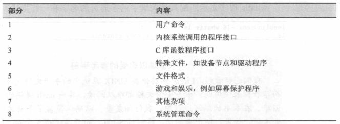
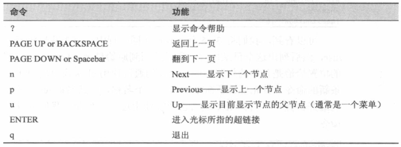

1. 命令本身相关
1.1. man
an interface to the system reference manuals
显示程序(可执行文件)的手册页
包括
- 标题
- 命令用途的描述
- 命令句法的摘要
- 命令选项列表
- 每个命令选项的描述
man 命令显示的“手册文档”被组织成多个 section

man command
man section search_term # 明确指定具体 section
1.2. help
- 获取 shell 内置命令的帮助文档(bash 中使用)
help command
- 显示命令的使用信息
command --help
1.3. type
- 显示命令的类型
- 根据指定的命令名显示 shell 将要执行的命令类型
type command
1.4. which
shows the full path of (shell) commands.
- 显示可执行程序的位置，其输出类似于 type
which command
1.5. apropos
search the manual page names and descriptions
- 显示合适的命令。通过搜索参考手册来实现
apropos search_term
- 相似功能命令
man -k search_term
1.6. whatis
display one-line manual page descriptions
- 显示命令的简要描述
whatis command
1.7. info
read Info documents
- 显示命令的 info 条目
- GNU 项目提供了 info 页面来代替手册文档
info search_term
- info 内容浏览

1.8. alias 和 unalias
alias 创建别名。直接运行可以查看环境中定义的所有别名
unalias 删除别名
alias name='string'
# 单双引号均可，使用双引号，可以嵌入内部命令
alias foo="echo `pwd`"
unalias name # 删除别名
alias # 查看环境中定义的所有别名